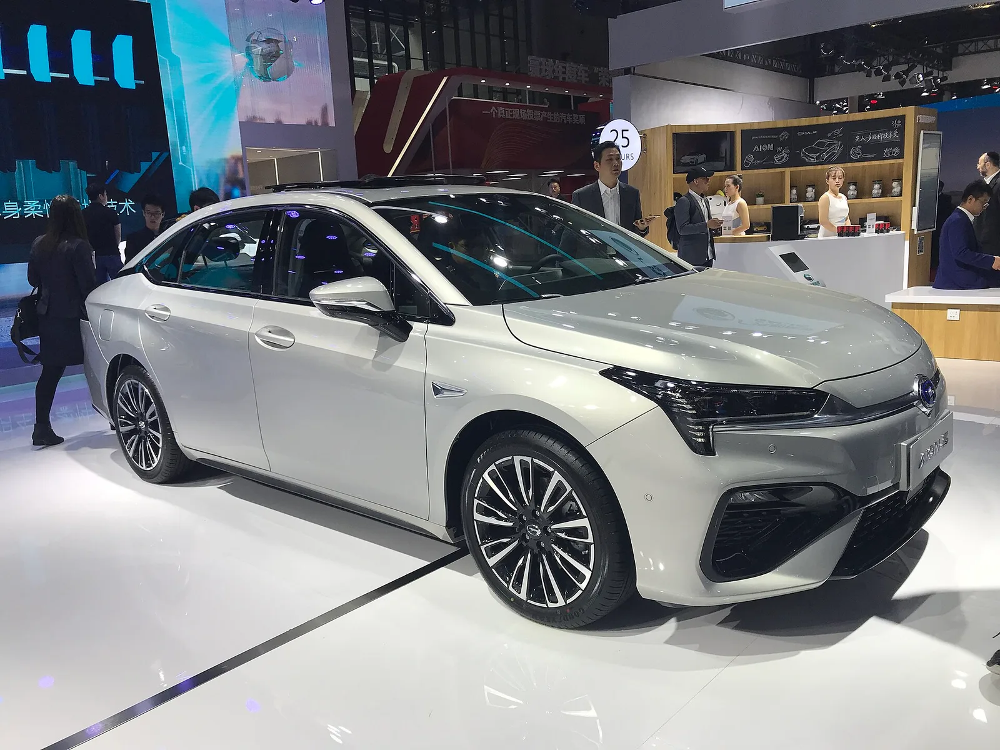

▲ GAC 아이온. 레이 7은 새 로고를 다는 첫 모델이다 ⓒ Wikimedia Commons
GAC 아이온이 레이 7을 공개했습니다. 새로 만든 '레이' 시리즈의 첫 모델이자, 새 로고를 다는 첫 차입니다.
제원표를 보면 브랜드보다 눈에 띄는 이름이 있습니다. 화웨이입니다.
모터, 통합 구동 시스템, 브레이크, 라이다까지 화웨이 부품이 들어갑니다.
1. 화웨이가 대는 부품 목록
| 영역 | 부품 | 역할 |
|---|---|---|
| 구동 | 드라이브ONE 통합 전기 구동 시스템 | 모터·인버터·감속기를 하나로 묶은 유닛 |
| 출력 | 모터 180kW(241마력) | — |
| 제동 | EMB 완전 전자식 브레이크 | 유압 배관 없이 전기 신호로 제동 |
| 인지 | 192채널 라이다 | 주행보조 핵심 센서 |
구동과 제동, 그리고 인지가 전부 한 회사에서 나옵니다. 차의 움직임을 결정하는 세 축입니다.
EMB는 특히 눈여겨볼 항목입니다. 기존 브레이크는 페달을 밟으면 유압이 브레이크 캘리퍼를 누르는 구조입니다. EMB는 유압 라인을 없애고 전기 신호로 각 바퀴를 개별 제어합니다. 응답이 빨라지고 회생제동과의 협조 제어가 매끄러워집니다.
다만 대가도 있습니다. 전기 계통이 죽으면 제동이 어려워집니다. 그래서 EMB를 쓰는 차는 이중 전원과 백업 회로를 필수로 갖춰야 합니다. 부품 수가 줄어드는 대신 안전 설계 난도가 올라가는 기술입니다.
2. 700km와 0.22
| 주행거리 | CLTC 700km |
|---|---|
| 전비 | 9.7kWh/100km (CLTC) |
| 공기저항계수 | 0.22 |
| 공력 최적화 | 14개 항목 |
| 배터리 | CATL 매거진 배터리 2.0 |
공기저항계수 0.22는 양산 세단 중 상위권입니다. 전고 1,455mm라는 낮은 차체가 여기에 기여합니다.
전비 9.7kWh/100km도 주목할 만합니다. 100km를 가는 데 9.7kWh를 쓴다는 뜻이고, 700km를 가려면 약 68kWh가 필요하다는 계산이 나옵니다. 배터리 용량은 공개되지 않았지만 이 범위로 추정할 수 있습니다.
다만 CLTC는 중국 기준입니다. 국내 산업부 인증이나 미국 EPA 기준보다 낙관적으로 나오는 편입니다. 같은 차라도 국내 인증을 거치면 숫자가 상당히 줄어듭니다.

▲ GAC 아이온 V 2세대. 레이 시리즈는 이와 별개의 새 라인업이다
3. 제동거리 33m를 어떻게 봐야 하나
100km/h에서 정지까지 33m는 준수한 수치입니다. 일반적인 양산 세단이 35~40m 구간에 분포합니다.
| 구간 | 평가 |
|---|---|
| 32m 이하 | 고성능차 수준 |
| 33~35m | 우수 |
| 36~40m | 일반적 |
| 41m 이상 | 미흡 |
제동거리는 브레이크만의 성과가 아닙니다. 타이어, 무게, 서스펜션 세팅, 노면 상태가 함께 작용합니다. 제조사가 발표하는 수치는 통상 최적 조건에서의 값입니다.
4. 새 로고를 다는 이유
레이 7은 아이온의 새 로고를 처음 붙이는 차입니다. 젊은 소비자층을 겨냥한 브랜드 리프레시라는 것이 회사의 설명입니다.
배경에는 시장 구조가 있습니다. 아이온은 원래 택시·차량 호출 시장에서 강했습니다. 이 시장에서 쌓인 이미지가 개인 소비자 판매에서는 걸림돌이 됩니다. 로고와 시리즈 이름을 새로 세우는 것은 그 이미지를 갈아입으려는 시도로 읽힙니다.
경쟁 상대로는 샤오미 SU7, 지커 007, 상제 Z7이 지목됐습니다. 모두 20만~30만 위안대의 전기 세단입니다.
5. 구동계를 사 오면 무엇이 남나
이 차가 보여주는 것은 중국 완성차 산업의 구조 변화입니다.
| 영역 | 공급 |
|---|---|
| 구동 시스템 | 화웨이 |
| 제동 | 화웨이 |
| 라이다 | 화웨이 |
| 배터리 | CATL |
| 차체·디자인·조립 | GAC 아이온 |
완성차 업체에 남는 것은 차체 설계, 디자인, 조립, 그리고 판매망입니다. 전통적으로 완성차의 핵심 역량으로 여겨지던 파워트레인이 외부로 넘어갔습니다.
이 구조는 빠르게 차를 내놓는 데는 유리합니다. 개발 기간과 초기 투자가 줄어듭니다. 대신 차별화 여지가 좁아지고 공급사 협상력이 커집니다. 같은 화웨이 구동계를 쓰는 브랜드가 늘어날수록 이 문제는 커집니다.

▲ GAC 아이온 S. 아이온은 택시·차량호출 시장에서 쌓은 이미지를 바꾸려 하고 있다

▲ GAC는 아이온 외에도 다양한 전동화 라인업을 운영한다

▲ 화웨이 부품 채택이 늘수록 브랜드 간 차별화 여지는 좁아진다
6. 정리
GAC 아이온 레이 7은 새 로고를 다는 첫 모델입니다. 화웨이 모터 180kW, 드라이브ONE 통합 구동, EMB 완전 전자식 브레이크, 192채널 라이다가 들어갑니다.
CLTC 700km, 전비 9.7kWh/100km, 공기저항계수 0.22를 기록했고, 배터리는 CATL 매거진 배터리 2.0입니다. 100km/h 제동거리는 33m입니다.
차체는 4,960 × 1,900 × 1,455mm의 5인승 세단이며, 예상 가격은 20만~25만 위안입니다. 8월 21~30일 청두 오토쇼에서 정식 공개됩니다.